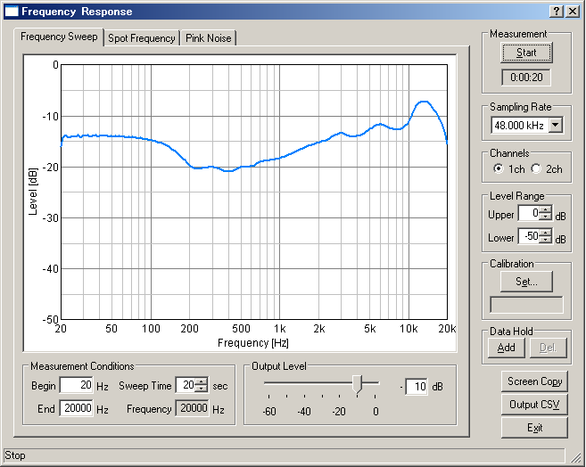

DSSF3 > RA > Reference Manual
Frequency response
- Common setting items
- Frequency sweep
- Spot frequency
- Pink noise

Frequency Response made a change of a level for frequency a graph. Frequency Response can be measured by three kinds of methods a Frequency Sweep, Spot Frequency, and Pink Noise.
Frequency Sweep is measured changing frequency continuously and the graph of the continuous smooth curve can be drawn. Spot Frequency is measured changing frequency gradually, since the filter which passes only the frequency under measurement is used, it is hard to be influenced by a noise and there is an advantage from which the most exact value is acquired. Pink Noise is the method of searching for a frequency characteristic by conducting FFT analysis of the pink noise, and there is the feature which can display the graph of all the frequency bands simultaneously.
DSSF3 > RA > Reference Manual